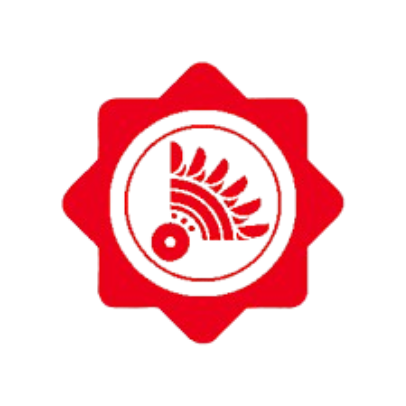
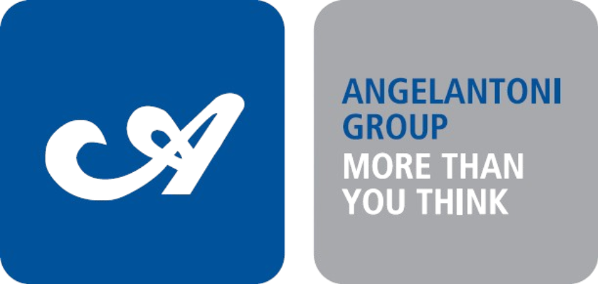
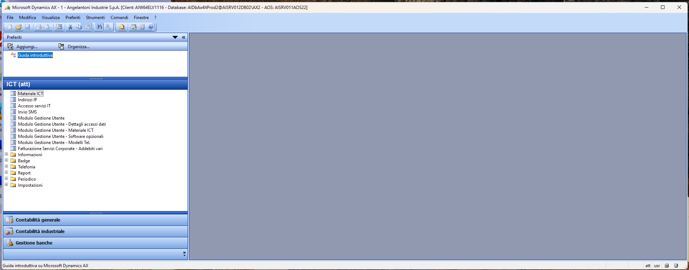
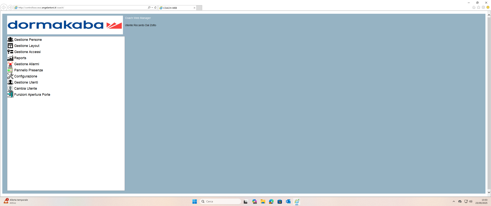
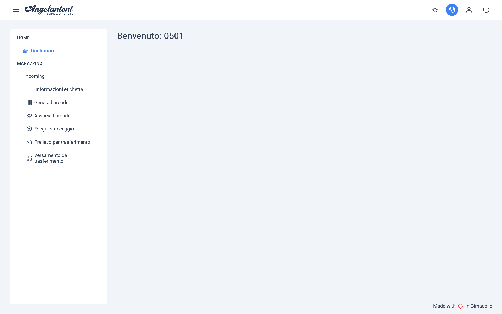

Formazione Scuola Lavoro presso Angelantoni Industrie S.r.l.
Sono Riccardo Dal Zotto, ho 18 anni e ho frequentato il quinto anno del corso di Informatica e Telecomunicazioni presso l'ITT Allievi Sangallo di Terni. Sono appassionato di tecnologia fin da piccolo: mi interessano la programmazione, le reti informatiche e l'hardware, e la FSL è stata l'occasione concreta per confrontarmi con un ambiente IT professionale reale.

Angelantoni Industrie S.r.l. ha sede a Massa Martana (PG) ed è attiva nei settori della refrigerazione scientifica, ambientale e industriale. Fondata nel 1932, è cresciuta fino a diventare un riferimento internazionale nella simulazione ambientale, nella criogenia e nei rivestimenti sottili, mantenendo radici solide nel territorio umbro.
Il percorso FSL si è svolto all'interno di due uffici: l'Ufficio IT, che gestisce l'intera infrastruttura informatica dell'azienda, e l'Ufficio Software, che si occupa dello sviluppo di applicativi interni e della configurazione di sistemi embedded nelle camere ambientali.

La FSL si è articolata in tre periodi distinti, tutti presso la stessa azienda:
Il tutor aziendale è stato Mirko (Responsabile IT), con il supporto dei colleghi Gabriele, Giacomo, Renzo e Simone. I tutor scolastici sono Federico Cini nei primi due periodi e Teresa Ricci nel terzo.
L'Ufficio IT di Angelantoni è il punto di riferimento per l'intera infrastruttura informatica del gruppo: dalla gestione delle postazioni e dei server alla sicurezza della rete, dal provisioning dei nuovi dipendenti al supporto quotidiano agli utenti. Ho operato in affiancamento ai colleghi, con progressiva autonomia nel corso dei tre periodi.
Ho partecipato all'installazione e configurazione di PC aziendali: installazione del sistema operativo, setup di Office e dei software specifici, inserimento nel dominio Windows e assegnazione delle policy di gruppo. Nel secondo periodo ho eseguito autonomamente la configurazione completa di una postazione per un nuovo dipendente, incluso il montaggio fisico. Questo mi ha permesso di padroneggiare il processo dall'inizio alla fine, che in azienda deve essere eseguito in modo rapido e standardizzato.
Ho affiancato i colleghi negli interventi di helpdesk in loco: risoluzione di problemi hardware e software, sostituzione toner, installazione driver (tra cui convertitori USB→Seriale per comunicare con le camere atmosferiche), sostituzione di componenti su pc portatili. Nel secondo periodo ho osservato la risoluzione di un conflitto IP su una pistola Datalogic tramite le DHCP Reservations, e il troubleshooting di un telefono Gigaset non connesso. Nel terzo periodo ho partecipato allo smistamento e alla preparazione di monitor dismessi.
Ho imparato a utilizzare il gestionale aziendale AX per creare nuove utenze, assegnare licenze ai dipendenti e associare materiale IT agli utenti. Nel terzo periodo ho usato AX anche nella procedura di smaltimento dei PC di Angelantoni Life Science: disassegnazione del materiale, archiviazione dei dati degli utenti ancora attivi, rimozione dal dominio e da Active Directory, e rimozione dal sistema di aggiornamento centralizzato CCM.

Ho acquisito le basi dell'uso di Active Directory: creazione e gestione degli account utente, rimozione di macchine dal dominio, gestione delle licenze Office 365. Queste operazioni fanno parte del flusso standard di onboarding e offboarding dei dipendenti e vanno eseguite in maniera standardizzata.
Ho imparato a utilizzare il software Dormakaba per la gestione del controllo accessi: creazione e configurazione di badge per i dipendenti, assegnazione dei permessi di accesso alle aree aziendali. Un'attività trasversale presente in tutti e tre i periodi, ogni volta che venivano inseriti nuovi dipendenti o modificati i profili di accesso.

Ho visitato il datacenter interno e osservato come vengono gestiti i server: virtualizzazione con VMware vSphere, interfacce web di amministrazione, cambio di un HDD in hot swap. Nel terzo periodo ho visitato anche il "mini" server del Disaster Recovery interno, comprendendo l'importanza della ridondanza in un'azienda di queste dimensioni.
Ho osservato la gestione del firewall Fortigate: configurazione delle regole di sicurezza, monitoraggio del traffico di rete e gestione degli accessi. Il firewall è uno degli strumenti centrali per la protezione dell'intera infrastruttura aziendale.
Ho seguito il funzionamento del server di posta Microsoft Exchange, osservando come vengono gestite le caselle di posta dei dipendenti, le distribuzioni e le policy di utilizzo della posta elettronica aziendale.
Ho preso familiarità con le interfacce dei telefoni VoIP Cisco e Gigaset in uso in azienda. Nel terzo periodo ho seguito la configurazione di nuove utenze sui telefoni Cisco per i nuovi dipendenti, come parte del processo di onboarding.
Nel terzo periodo il collega Renzo mi ha illustrato nel dettaglio la web app interna per la gestione del materiale in ingresso e del magazzino IT: dall'interfaccia utente al funzionamento pratico all'interno del magazzino. Ho potuto seguire l'intero flusso, dalla registrazione del materiale in entrata alla sua collocazione e tracciabilità.

Durante il secondo periodo ho trascorso una settimana nell'Ufficio Software, che si occupa dello sviluppo di applicativi interni e della configurazione di sistemi embedded per i pannelli di controllo delle camere atmosferiche prodotte dall'azienda.
Ho imparato a configurare schede elettroniche basate su piattaforma Linaro, che fungono da unità di controllo per i pannelli ESA delle camere atmosferiche. La procedura prevede il trasferimento di un pacchetto firmware via SFTP e l'esecuzione di una sequenza di comandi per l'installazione e il riavvio del sistema.
Ho sviluppato autonomamente uno script Python che automatizza l'intero processo di configurazione delle schede, sfruttando anche la configurazione di un server DHCP locale per assegnare automaticamente un indirizzo IP alla board nel momento del collegamento: ricerca automatica dell'IP del dispositivo nella rete locale, connessione SFTP, trasferimento del firmware ed esecuzione guidata dei comandi di installazione. Lo script ha ridotto significativamente il tempo necessario per configurare ogni scheda, eliminando passaggi manuali ripetitivi e possibili errori umani.
Le attività svolte hanno permesso di sviluppare competenze sia nuove che già presenti, consolidandole in un contesto professionale reale.
Installazione OS, messa a dominio, policy di gruppo, setup software in ambienti Windows enterprise.
Gestione utenze, gruppi, rimozione macchine dal dominio, gestione licenze Office 365 e server di posta Exchange.
Gestione asset IT, associazione materiale ai dipendenti, onboarding e offboarding in un gestionale ERP aziendale.
Creazione badge, gestione profili di accesso e permessi per aree aziendali.
Diagnosi e risoluzione problemi su postazioni fisiche, periferiche, driver, conflitti di rete e telefoni VoIP.
Nozioni su virtualizzazione VMware, DHCP, firewall Fortigate, hot swap HDD, Disaster Recovery.
Sviluppo di uno script per automatizzare la configurazione di schede embedded via SFTP, riducendo tempi e margine di errore.
Sostituzione SSD NVMe, batterie su portatili, toner, smontaggio e rimontaggio di notebook (es. Dell Latitude 7490). Confidenza migliorata nel mettere mano ai componenti interni.